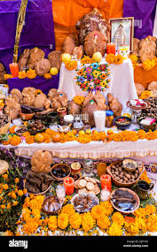
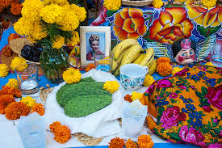

Food
When celebrating, people always leave food on people's graves or on their ofrenda.

Traditional Offerings
- Pan de Muerto: A sweet, soft bread shaped to resemble bones, meant as an edible offering to connect with the dead.
- Calaveritas de Azúcar: Colorful sugar or chocolate skulls representing the departed.
- Tamales and Mole: Hearty, celebratory dishes often prepared in large batches for the visiting spirits.
- Fresh Fruit: Oranges, bananas, and sugarcane are commonly left as healthy, natural snacks.
Personal & Festive Items
- Specialty Drinks: Families set out coffee, hot chocolate, or atole, as well as adult beverages like tequila, mezcal, beer, or a favorite soda.
- Personal Favorites: Anything the deceased loved in life—whether it is a specific brand of cigarettes, a favorite candy, or particular cookies.
- Snacks: Small clay pots filled with local seeds, pumpkin seeds, or nuts.
The Meaning of the Food
It is believed that the returning spirits consume the "spiritual essence" or flavor of the food while the physical items remain. After the holiday, the family will gather to eat the offerings

